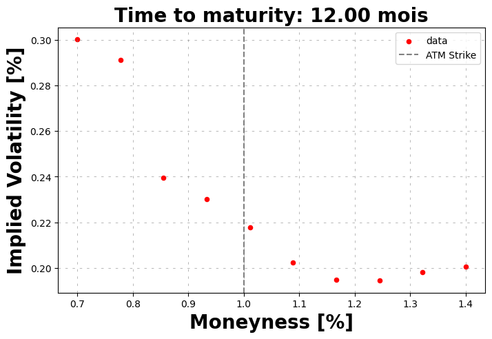

With syntetic market price#
Here with an Heston model.
[1]:
from hestonpy.models.heston import Heston
from hestonpy.models.bates import Bates
from hestonpy.models.calibration.volatilitySmile import VolatilitySmile
import matplotlib.pyplot as plt
import numpy as np
r = 0.00
Some parameters
[2]:
spot = 100
time_to_maturity = 1
true_params = {
"vol_initial": 0.06,
"kappa": 1.25,
"theta": 0.06,
"sigma": 0.6,
"rho": -0.5,
"drift_emm": 0.00,
}
vol = np.sqrt(0.04)
heston = Heston(spot=spot, r=r, **true_params)
price_function = heston.call_price
strikes = np.linspace(70, 140, 10)
Without noise#
[3]:
market_prices = price_function(**true_params, strike=strikes, time_to_maturity=time_to_maturity, s=spot)
volSmile = VolatilitySmile(
strikes=strikes,
time_to_maturity=time_to_maturity,
atm=spot,
market_prices=market_prices,
r=r
)
volSmile.plot()
Local optimization#
[4]:
calibrated_params = volSmile.calibration(
price_function=price_function,
initial_guess = [1.0, 0.03, 0.4, -0.5],
guess_correlation_sign='negative',
speed='local',
)
calibrated_heston = Heston(spot=spot, r=r, **calibrated_params)
volSmile.plot(calibrated_prices=heston.call_price(strike=strikes, time_to_maturity=time_to_maturity))
calibrated_params
Calibrated parameters: v0=0.046 | kappa=0.985 | theta=0.085 | sigma=0.580 | rho=-0.506
[4]:
{'vol_initial': np.float64(0.04589503493265889),
'kappa': np.float64(0.9849851420478373),
'theta': np.float64(0.08456116488309652),
'sigma': np.float64(0.580145120734101),
'rho': np.float64(-0.5063722128514593),
'drift_emm': 0}
[5]:
true_params
[5]:
{'vol_initial': 0.06,
'kappa': 1.25,
'theta': 0.06,
'sigma': 0.6,
'rho': -0.5,
'drift_emm': 0.0}
###Â Global optimization
[6]:
calibrated_params = volSmile.calibration(
price_function=price_function,
initial_guess = [1.0, 0.03, 0.4, -0.5],
guess_correlation_sign='negative',
speed='global',
)
calibrated_heston = Heston(spot=spot, r=r, **calibrated_params)
volSmile.plot(calibrated_prices=heston.call_price(strike=strikes, time_to_maturity=time_to_maturity))
calibrated_params
at minimum 0.000002 accepted 1
Parameters: kappa=0.985 | theta=0.085 | sigma=0.580 | rho=-0.506
---------------------------------------------------------------------------
KeyboardInterrupt Traceback (most recent call last)
Cell In[6], line 1
----> 1 calibrated_params = volSmile.calibration(
2 price_function=price_function,
3 initial_guess = [1.0, 0.03, 0.4, -0.5],
4 guess_correlation_sign='negative',
5 speed='global',
6 )
7 calibrated_heston = Heston(spot=spot, r=r, **calibrated_params)
8 volSmile.plot(calibrated_prices=heston.call_price(strike=strikes, time_to_maturity=time_to_maturity))
File ~/Documents/packages/hestonpy/src/hestonpy/models/calibration/volatilitySmile.py:302, in VolatilitySmile.calibration(self, price_function, initial_guess, guess_correlation_sign, speed, power, method, weights, relative_errors)
300 with warnings.catch_warnings():
301 warnings.simplefilter("ignore", category=RuntimeWarning)
--> 302 result = basinhopping(
303 cost_function,
304 x0=initial_guess,
305 callback=_callbacks(model_type),
306 minimizer_kwargs=minimizer_kwargs,
307 niter=10,
308 niter_success=4,
309 # stepsize=0.3,
310 take_step=CustomStep(model_type),
311 T=2.0,
312 )
313 print(result.message, result.success)
314 else:
File ~/Documents/packages/hestonpy/.venv/lib/python3.10/site-packages/scipy/_lib/_util.py:440, in _transition_to_rng.<locals>.decorator.<locals>.wrapper(*args, **kwargs)
433 message = (
434 "The NumPy global RNG was seeded by calling "
435 f"`np.random.seed`. Beginning in {end_version}, this "
436 "function will no longer use the global RNG."
437 ) + cmn_msg
438 warnings.warn(message, FutureWarning, stacklevel=2)
--> 440 return fun(*args, **kwargs)
File ~/Documents/packages/hestonpy/.venv/lib/python3.10/site-packages/scipy/optimize/_basinhopping.py:709, in basinhopping(func, x0, niter, T, stepsize, minimizer_kwargs, take_step, accept_test, callback, interval, disp, niter_success, rng, target_accept_rate, stepwise_factor)
706 message = ["requested number of basinhopping iterations completed"
707 " successfully"]
708 for i in range(niter):
--> 709 new_global_min = bh.one_cycle()
711 if callable(callback):
712 # should we pass a copy of x?
713 val = callback(bh.xtrial, bh.energy_trial, bh.accept)
File ~/Documents/packages/hestonpy/.venv/lib/python3.10/site-packages/scipy/optimize/_basinhopping.py:162, in BasinHoppingRunner.one_cycle(self)
159 self.nstep += 1
160 new_global_min = False
--> 162 accept, minres = self._monte_carlo_step()
164 if accept:
165 self.energy = minres.fun
File ~/Documents/packages/hestonpy/.venv/lib/python3.10/site-packages/scipy/optimize/_basinhopping.py:111, in BasinHoppingRunner._monte_carlo_step(self)
108 x_after_step = self.step_taking(x_after_step)
110 # do a local minimization
--> 111 minres = self.minimizer(x_after_step)
112 x_after_quench = minres.x
113 energy_after_quench = minres.fun
File ~/Documents/packages/hestonpy/.venv/lib/python3.10/site-packages/scipy/optimize/_basinhopping.py:294, in MinimizerWrapper.__call__(self, x0)
292 return self.minimizer(x0, **self.kwargs)
293 else:
--> 294 return self.minimizer(self.func, x0, **self.kwargs)
File ~/Documents/packages/hestonpy/.venv/lib/python3.10/site-packages/scipy/optimize/_minimize.py:738, in minimize(fun, x0, args, method, jac, hess, hessp, bounds, constraints, tol, callback, options)
735 res = _minimize_newtoncg(fun, x0, args, jac, hess, hessp, callback,
736 **options)
737 elif meth == 'l-bfgs-b':
--> 738 res = _minimize_lbfgsb(fun, x0, args, jac, bounds,
739 callback=callback, **options)
740 elif meth == 'tnc':
741 res = _minimize_tnc(fun, x0, args, jac, bounds, callback=callback,
742 **options)
File ~/Documents/packages/hestonpy/.venv/lib/python3.10/site-packages/scipy/optimize/_lbfgsb_py.py:441, in _minimize_lbfgsb(fun, x0, args, jac, bounds, disp, maxcor, ftol, gtol, eps, maxfun, maxiter, iprint, callback, maxls, finite_diff_rel_step, **unknown_options)
433 _lbfgsb.setulb(m, x, low_bnd, upper_bnd, nbd, f, g, factr, pgtol, wa,
434 iwa, task, lsave, isave, dsave, maxls, ln_task)
436 if task[0] == 3:
437 # The minimization routine wants f and g at the current x.
438 # Note that interruptions due to maxfun are postponed
439 # until the completion of the current minimization iteration.
440 # Overwrite f and g:
--> 441 f, g = func_and_grad(x)
442 elif task[0] == 1:
443 # new iteration
444 n_iterations += 1
File ~/Documents/packages/hestonpy/.venv/lib/python3.10/site-packages/scipy/optimize/_differentiable_functions.py:345, in ScalarFunction.fun_and_grad(self, x)
343 self._update_x(x)
344 self._update_fun()
--> 345 self._update_grad()
346 return self.f, self.g
File ~/Documents/packages/hestonpy/.venv/lib/python3.10/site-packages/scipy/optimize/_differentiable_functions.py:307, in ScalarFunction._update_grad(self)
305 if self._orig_grad in FD_METHODS:
306 self._update_fun()
--> 307 self.g = self._wrapped_grad(self.x, f0=self.f)
308 self.g_updated = True
File ~/Documents/packages/hestonpy/.venv/lib/python3.10/site-packages/scipy/optimize/_differentiable_functions.py:48, in _wrapper_grad.<locals>.wrapped1(x, f0)
46 def wrapped1(x, f0=None):
47 ncalls[0] += 1
---> 48 return approx_derivative(
49 fun, x, f0=f0, **finite_diff_options
50 )
File ~/Documents/packages/hestonpy/.venv/lib/python3.10/site-packages/scipy/optimize/_numdiff.py:523, in approx_derivative(fun, x0, method, rel_step, abs_step, f0, bounds, sparsity, as_linear_operator, args, kwargs)
520 use_one_sided = False
522 if sparsity is None:
--> 523 return _dense_difference(fun_wrapped, x0, f0, h,
524 use_one_sided, method)
525 else:
526 if not issparse(sparsity) and len(sparsity) == 2:
File ~/Documents/packages/hestonpy/.venv/lib/python3.10/site-packages/scipy/optimize/_numdiff.py:596, in _dense_difference(fun, x0, f0, h, use_one_sided, method)
594 x1[i] += h[i]
595 dx = x1[i] - x0[i] # Recompute dx as exactly representable number.
--> 596 df = fun(x1) - f0
597 elif method == '3-point' and use_one_sided[i]:
598 x1[i] += h[i]
File ~/Documents/packages/hestonpy/.venv/lib/python3.10/site-packages/scipy/optimize/_numdiff.py:474, in approx_derivative.<locals>.fun_wrapped(x)
471 if xp.isdtype(x.dtype, "real floating"):
472 x = xp.astype(x, x0.dtype)
--> 474 f = np.atleast_1d(fun(x, *args, **kwargs))
475 if f.ndim > 1:
476 raise RuntimeError("`fun` return value has "
477 "more than 1 dimension.")
File ~/Documents/packages/hestonpy/.venv/lib/python3.10/site-packages/scipy/optimize/_differentiable_functions.py:21, in _wrapper_fun.<locals>.wrapped(x)
17 ncalls[0] += 1
18 # Send a copy because the user may overwrite it.
19 # Overwriting results in undefined behaviour because
20 # fun(self.x) will change self.x, with the two no longer linked.
---> 21 fx = fun(np.copy(x), *args)
22 # Make sure the function returns a true scalar
23 if not np.isscalar(fx):
File ~/Documents/packages/hestonpy/src/hestonpy/models/calibration/volatilitySmile.py:270, in VolatilitySmile.calibration.<locals>.cost_function(params)
268 def cost_function(params):
269 function_params = _get_parameters(model_type, params)
--> 270 model_prices = price_function(
271 **function_params,
272 v=vol_initial,
273 strike=self.strikes,
274 time_to_maturity=self.time_to_maturity,
275 s=self.atm,
276 )
278 return difference_function(self.market_prices, model_prices)
File ~/Documents/packages/hestonpy/src/hestonpy/models/heston.py:353, in Heston.call_price(self, strike, time_to_maturity, s, v, **kwargs)
331 def call_price(
332 self,
333 strike: np.array,
(...)
337 **kwargs
338 ):
339 """
340 Price a European call option using the Carr-Madan method.
341
(...)
350 :rtype: float
351 """
--> 353 price = self.carr_madan_price(
354 s=s,
355 v=v,
356 strike=strike,
357 time_to_maturity=time_to_maturity,
358 **kwargs
359 )
360 return price
File ~/Documents/packages/hestonpy/src/hestonpy/models/heston.py:514, in Heston.carr_madan_price(self, strike, time_to_maturity, s, v, error_boolean, **kwargs)
505 price_hat = (
506 lambda u: np.exp(-self.r * time_to_maturity)
507 / (alpha**2 + alpha - u**2 + u * (2 * alpha + 1) * 1j)
508 * self.characteristic(j=2, **kwargs)(x, v, time_to_maturity, u - (alpha + 1) * 1j)
509 )
511 integrand = lambda u: np.exp(-u * np.log(strike) * 1j) * price_hat(u)
513 price = np.real(
--> 514 np.exp(-alpha * np.log(strike)) / np.pi * quad_vec(f=integrand, a=0, b=1000)[0]
515 )
517 if error_boolean:
518 error = (
519 np.exp(-alpha * np.log(strike)) / np.pi * quad_vec(f=integrand, a=0, b=1000)[1]
520 )
File ~/Documents/packages/hestonpy/.venv/lib/python3.10/site-packages/scipy/integrate/_quad_vec.py:412, in quad_vec(f, a, b, epsabs, epsrel, norm, cache_size, limit, workers, points, quadrature, full_output, args)
409 err_sum += -neg_old_err
411 # Subdivide intervals
--> 412 for parts in mapwrapper(_subdivide_interval, to_process):
413 dint, derr, dround_err, subint, dneval = parts
414 neval += dneval
File ~/Documents/packages/hestonpy/.venv/lib/python3.10/site-packages/scipy/integrate/_quad_vec.py:472, in _subdivide_interval(args)
470 s1, err1, round1 = _quadrature(a, c, f, norm_func)
471 dneval = _quadrature.num_eval
--> 472 s2, err2, round2 = _quadrature(c, b, f, norm_func)
473 dneval += _quadrature.num_eval
474 if old_int is None:
File ~/Documents/packages/hestonpy/.venv/lib/python3.10/site-packages/scipy/integrate/_quad_vec.py:626, in _quadrature_gk21(a, b, f, norm_func)
603 # 21-point weights
604 v = (0.011694638867371874278064396062192,
605 0.032558162307964727478818972459390,
606 0.054755896574351996031381300244580,
(...)
623 0.032558162307964727478818972459390,
624 0.011694638867371874278064396062192)
--> 626 return _quadrature_gk(a, b, f, norm_func, x, w, v)
File ~/Documents/packages/hestonpy/.venv/lib/python3.10/site-packages/scipy/integrate/_quad_vec.py:527, in _quadrature_gk(a, b, f, norm_func, x, w, v)
525 s_k_abs = 0.0
526 for i in range(len(x)):
--> 527 ff = f(c + h*x[i])
528 fv[i] = ff
530 vv = v[i]
File ~/Documents/packages/hestonpy/src/hestonpy/models/heston.py:511, in Heston.carr_madan_price.<locals>.<lambda>(u)
503 alpha = 0.3
505 price_hat = (
506 lambda u: np.exp(-self.r * time_to_maturity)
507 / (alpha**2 + alpha - u**2 + u * (2 * alpha + 1) * 1j)
508 * self.characteristic(j=2, **kwargs)(x, v, time_to_maturity, u - (alpha + 1) * 1j)
509 )
--> 511 integrand = lambda u: np.exp(-u * np.log(strike) * 1j) * price_hat(u)
513 price = np.real(
514 np.exp(-alpha * np.log(strike)) / np.pi * quad_vec(f=integrand, a=0, b=1000)[0]
515 )
517 if error_boolean:
File ~/Documents/packages/hestonpy/src/hestonpy/models/heston.py:508, in Heston.carr_madan_price.<locals>.<lambda>(u)
502 v = kwargs.get("vol_initial", self.vol_initial) # Initial variance
503 alpha = 0.3
505 price_hat = (
506 lambda u: np.exp(-self.r * time_to_maturity)
507 / (alpha**2 + alpha - u**2 + u * (2 * alpha + 1) * 1j)
--> 508 * self.characteristic(j=2, **kwargs)(x, v, time_to_maturity, u - (alpha + 1) * 1j)
509 )
511 integrand = lambda u: np.exp(-u * np.log(strike) * 1j) * price_hat(u)
513 price = np.real(
514 np.exp(-alpha * np.log(strike)) / np.pi * quad_vec(f=integrand, a=0, b=1000)[0]
515 )
File ~/Documents/packages/hestonpy/src/hestonpy/models/heston.py:274, in Heston.characteristic.<locals>.<lambda>(x, v, time_to_maturity, u)
262 Cj = lambda tau, u: self.r * u * tau * 1j + a * (
263 (bj - rho * sigma * u * 1j + dj(u)) * tau
264 - 2 * np.log((1 - gj(u) * np.exp(dj(u) * tau)) / (1 - gj(u)))
265 )
266 Dj = (
267 lambda tau, u: (bj - rho * sigma * u * 1j + dj(u))
268 / sigma**2
269 * (1 - np.exp(dj(u) * tau))
270 / (1 - gj(u) * np.exp(dj(u) * tau))
271 )
273 return lambda x, v, time_to_maturity, u: np.exp(
--> 274 Cj(time_to_maturity, u) + Dj(time_to_maturity, u) * v + u * x * 1j
275 )
File ~/Documents/packages/hestonpy/src/hestonpy/models/heston.py:269, in Heston.characteristic.<locals>.<lambda>(tau, u)
258 gj = lambda u: (rho * sigma * u * 1j - bj - dj(u)) / (
259 rho * sigma * u * 1j - bj + dj(u)
260 )
262 Cj = lambda tau, u: self.r * u * tau * 1j + a * (
263 (bj - rho * sigma * u * 1j + dj(u)) * tau
264 - 2 * np.log((1 - gj(u) * np.exp(dj(u) * tau)) / (1 - gj(u)))
265 )
266 Dj = (
267 lambda tau, u: (bj - rho * sigma * u * 1j + dj(u))
268 / sigma**2
--> 269 * (1 - np.exp(dj(u) * tau))
270 / (1 - gj(u) * np.exp(dj(u) * tau))
271 )
273 return lambda x, v, time_to_maturity, u: np.exp(
274 Cj(time_to_maturity, u) + Dj(time_to_maturity, u) * v + u * x * 1j
275 )
File ~/Documents/packages/hestonpy/src/hestonpy/models/heston.py:254, in Heston.characteristic.<locals>.<lambda>(u)
251 return 0
252 a = kappa * theta / sigma**2
--> 254 dj = lambda u: np.sqrt(
255 (rho * sigma * u * 1j - bj) ** 2
256 - sigma**2 * (2 * uj * u * 1j - u**2)
257 )
258 gj = lambda u: (rho * sigma * u * 1j - bj - dj(u)) / (
259 rho * sigma * u * 1j - bj + dj(u)
260 )
262 Cj = lambda tau, u: self.r * u * tau * 1j + a * (
263 (bj - rho * sigma * u * 1j + dj(u)) * tau
264 - 2 * np.log((1 - gj(u) * np.exp(dj(u) * tau)) / (1 - gj(u)))
265 )
KeyboardInterrupt:
[ ]:
true_params
{'vol_initial': 0.06,
'kappa': 1.25,
'theta': 0.06,
'sigma': 0.6,
'rho': -0.5,
'drift_emm': 0.0}
With noise#
[ ]:
market_prices = market_prices * (1 + np.random.normal(scale=0.01, size=len(market_prices))) # a little of market noise
volSmile = VolatilitySmile(
strikes=strikes,
time_to_maturity=time_to_maturity,
atm=spot,
market_prices=market_prices,
r=r
)
volSmile.plot()

###Â Local optimization
[ ]:
calibrated_params = volSmile.calibration(
price_function=price_function,
initial_guess = [1.0, 0.03, 0.4, -0.5],
guess_correlation_sign='negative',
speed='local',
)
calibrated_heston = Heston(spot=spot, r=r, **calibrated_params)
volSmile.plot(calibrated_prices=heston.call_price(strike=strikes, time_to_maturity=time_to_maturity))
calibrated_params
Calibrated parameters: v0=0.046 | kappa=0.021 | theta=1.476 | sigma=0.417 | rho=-0.542

{'vol_initial': np.float64(0.04647240867107085),
'kappa': np.float64(0.02057993693658569),
'theta': np.float64(1.475751237282687),
'sigma': np.float64(0.41671804646099125),
'rho': np.float64(-0.5417957836420847),
'drift_emm': 0}
###Â Global optimization
[ ]:
calibrated_params = volSmile.calibration(
price_function=price_function,
initial_guess = [1.0, 0.03, 0.4, -0.5],
guess_correlation_sign='negative',
speed='global',
)
calibrated_heston = Heston(spot=spot, r=r, **calibrated_params)
volSmile.plot(calibrated_prices=heston.call_price(strike=strikes, time_to_maturity=time_to_maturity))
calibrated_params
at minimum 0.014711 accepted 1
Parameters: kappa=0.021 | theta=1.476 | sigma=0.417 | rho=-0.542
at minimum 0.014711 accepted 1
Parameters: kappa=0.019 | theta=1.627 | sigma=0.416 | rho=-0.542
at minimum 0.014711 accepted 1
Parameters: kappa=0.021 | theta=1.467 | sigma=0.417 | rho=-0.542
at minimum 0.014711 accepted 1
Parameters: kappa=0.019 | theta=1.576 | sigma=0.416 | rho=-0.542
at minimum 0.014710 accepted 1
Parameters: kappa=0.015 | theta=1.967 | sigma=0.416 | rho=-0.542
at minimum 0.014711 accepted 1
Parameters: kappa=0.017 | theta=1.818 | sigma=0.416 | rho=-0.542
at minimum 0.014710 accepted 1
Parameters: kappa=0.015 | theta=2.006 | sigma=0.416 | rho=-0.542
at minimum 0.014711 accepted 1
Parameters: kappa=0.018 | theta=1.685 | sigma=0.416 | rho=-0.542
at minimum 0.014715 accepted 1
Parameters: kappa=0.041 | theta=0.777 | sigma=0.421 | rho=-0.542
at minimum 0.014711 accepted 1
Parameters: kappa=0.018 | theta=1.705 | sigma=0.416 | rho=-0.542
at minimum 0.014711 accepted 1
Parameters: kappa=0.021 | theta=1.446 | sigma=0.417 | rho=-0.542
['requested number of basinhopping iterations completed successfully'] True
Calibrated parameters: v0=0.046 | kappa=0.015 | theta=2.006 | sigma=0.416 | rho=-0.542
{'vol_initial': np.float64(0.04647240867107085),
'kappa': np.float64(0.014974674425261712),
'theta': np.float64(2.0063921582063933),
'sigma': np.float64(0.41561958352269357),
'rho': np.float64(-0.5419272956890451),
'drift_emm': 0}